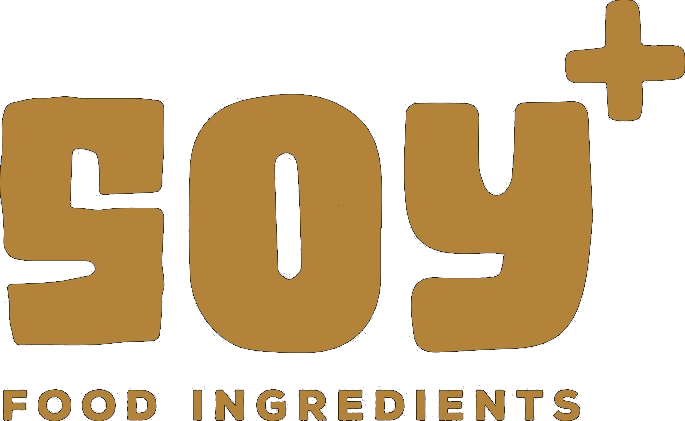

Proteína de Soja Texturizada


Cómo se obtiene
La proteína de soja texturizada (TPS) se obtiene a partir de harina de soja desgrasada con alto contenido en proteínas.
Como la TPS es deshidratada, es fácil de almacenar y transportar.
Beneficios para la salud
- 50% de contenido mínimo de proteína
- Baja en sodio
- Alto en fibra dietética
- Contiene componentes bioactivos naturales (isoflavonas)
Usos
- Extensor de carne para hamburguesas, salchichas y carne de pollo
- Pastas, como canelones y ravioles
- Pasteles para confitería y panes especiales
- Uso directo: hamburguesas para veganos y vegetarianos como reemplazo de la carne
- Es ingrediente en la mezcla de mantequilla, barras de cereales y otros alimentos